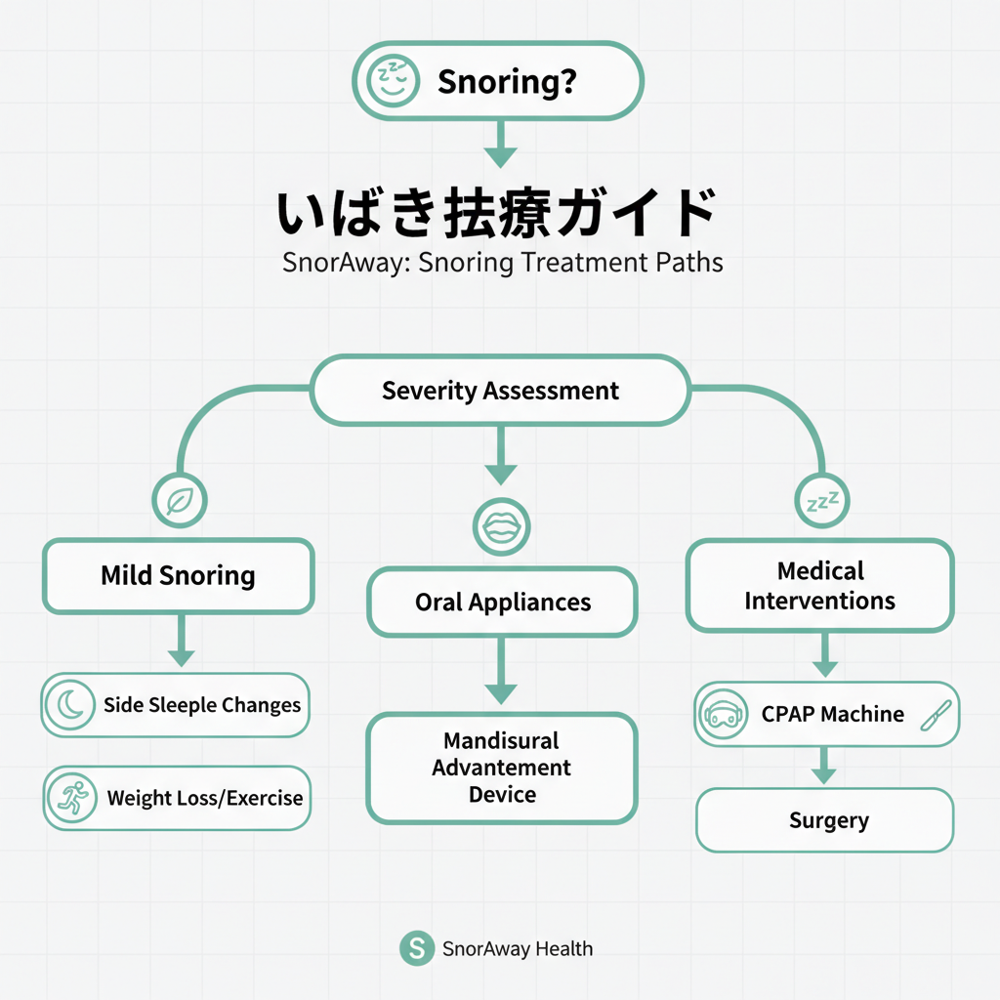

6日間の計測、お疲れさまでした。
ここまで、いびきの実態やリスクをお伝えしてきました。「じゃあ、どうすればいいの？」──今日はその答えです。
いびき対策には大きく3つの方法があります。「これならやれそう」と思えるものを、ひとつ選んでみてください。
いちばんハードルが低い方法です。今日からでも始められます。
・いびき防止枕（5,000〜15,000円）
気道を確保しやすい角度をキープ
・口閉じテープ（500〜1,000円/月）
鼻呼吸を促す。最も手軽
・ナステント（3,000〜5,000円/月）
鼻から気道を直接確保
・横向き寝サポーター（3,000〜8,000円）
仰向け寝を物理的に防ぐ
体重を10%減らすだけで、いびきの重症度は26%改善するという研究データもあります。グッズと生活習慣の改善を組み合わせると、さらに効果的です。
歯科で作る専用のマウスピースです。下あごを数ミリ前に出すことで、喉の奥の気道を広げます。
型取りから約2週間で完成。最近は3Dプリント技術でフィット感も向上しています。
CPAP（シーパップ）
鼻にマスクをつけて空気を送り込み、気道を開いたまま保つ治療法。睡眠時無呼吸症候群の標準治療です。保険適用で月約4,500円。
手術（UPPP等）
口蓋垂や軟口蓋の余分な組織を除去して気道を広げます。
レーザー治療
低侵襲レーザーで軟口蓋の組織を引き締めます。日帰り可能。
まずは耳鼻咽喉科か睡眠外来を受診し、
PSG検査でいびきの原因と重症度を
正確に特定することが最初のステップです。

いびきナビで計測した最大音量を目安に、自分に合った方法を選んでみてください。
・40dB以下 → まず「グッズ」で対策開始
・40〜65dB → 「マウスピース」を検討
・65dB以上 → 「専門医の受診」をおすすめ
もちろん、これはあくまで目安です。複数の方法を組み合わせるのも有効ですし、段階的に試していくのも賢い選択です。
大切なのは、「何もしない」以外の選択をすること。どんな小さな一歩でも、昨日までのあなたとは違います。
出典: Sutherland K et al., AJRCCM 2014 / Peppard PE et al., JAMA 2000
データが増えるほど、分析の精度が上がります